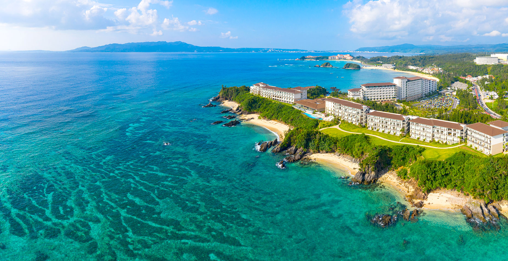
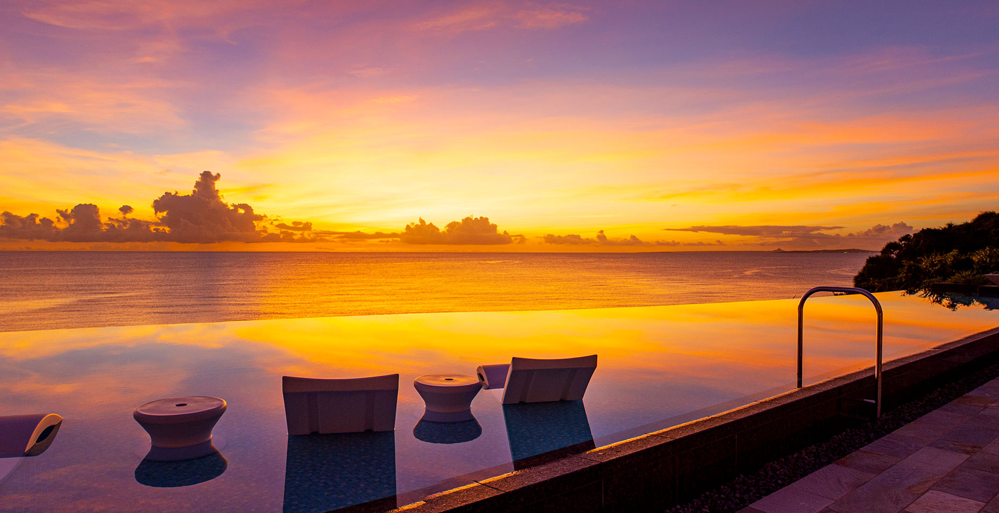
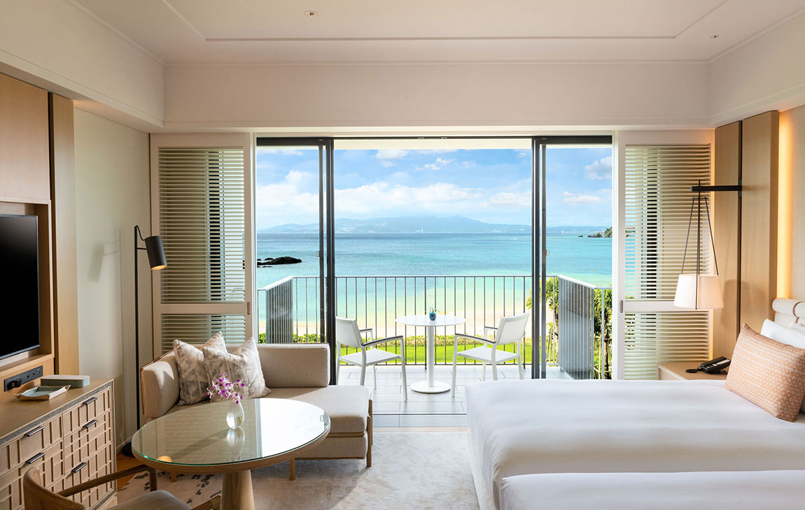

The plan: leave the US around July 12, spend the week in Taipei through the 20th, then fly to Okinawa on the 21st and drive straight up to the Onna coast — almost certainly Halekulani — for five nights. Taipei already gives us the city, the markets and the street food, so Okinawa doesn't need a walkable urban base: this half is purely reef, beach and rest. Below is where we'd stay, what we'd do from there, and a day-by-day for the five nights.
Home base · Halekulani Okinawa 恩納村 / Onna
An hour up the west coast from the airport: the Okinawa you picture, with reef right offshore, five pools, and sunset dinners over the sea. It isn't a walkable town — but that's fine, since Taipei is the urban week — and it puts the family's best snorkeling and Chad's signature shore dive minutes from the door.




Halekulani Okinawa The splurge
The serene, understated luxury the Halekulani name is known for — Okinawa's only Forbes Five-Star resort, facing a mile of emerald coastline inside a quasi-national park. Five pools (the Orchid infinity pool is the signature), calm oversized rooms that all look out to the sea, and the family's best snorkeling at Cape Maeda just down the coast.
What we'll do from there 海 / the water
Everything below is within easy reach of the resort: the reef a few steps offshore, one easy day north to the aquarium, a gentle cultural outing for Ahma & Yehyeh, and Chad's diving on the doorstep.
Cape Maeda / Maeda flats Snorkel
The island's signature shore snorkel: coral and clouds of fish right off the entry steps, the Blue Cave around the point. From the Onna base it's a quick hop rather than an hour each way.
Manza Beach / Cape Manza Postcard
The cape that turns up on every Okinawa postcard, with calm swim beaches below. Worth a sunset detour from the resort.
Okinawa Churaumi Aquarium Must-do
One of the world's great aquariums: the giant Kuroshio tank with whale sharks and manta rays, plus free outdoor dolphin shows, touch pools, turtles and manatees. From the Onna coast it's about an hour, so it pairs neatly with a beach afternoon — and it's the perfect rainy-day plan.
Sesoko Beach Netted zone
Soft sand, clear shallow water, a netted safe-swim area with small fish, plus chair/umbrella rentals. Pair it with Churaumi for one big northern day.
Ryukyu Mura Culture
An open-air village of relocated traditional Ryukyu houses with eisa drum performances, craft workshops and snacks. The authentic-flavor outing that doesn't need a city — flat, shaded, easy on the feet.
The resort itself On foot
Their easy default: seafront promenades, gardens, a spa, the pools, and a lounge with a view. After a busy Taipei week, five slow days by the sea is exactly the right pace for them.
Cape Maeda / Blue Cave Right here
Premier shore dive on the doorstep: the Blue Cave's glow, turtles, healthy reef. Freedive or scuba with no boat needed — the big Onna upside for diving, and the family can tag along to snorkel.
Freediving & reef boats Breath-hold
Onna shops run boats to nearby reefs and proper freediving / AIDA sessions with one-up-one-down safety — the right call for pushing depth. A "Kerama Blue" big-day is possible too, though it's a longer haul from this side of the island.
Day by day (five nights · just to illustrate)
The five nights at a glance — loose on purpose. We fly Taipei → Okinawa on the 21st and drive straight up to Halekulani. The front days take the weather-dependent water while everyone's fresh, the aquarium is one easy day north, and the back end stays flexible for July weather. Dates assume a ~July 21 arrival; shuffle freely.
Everything on one map 地図
Color-coded by who it's for. It all sits along the west-central coast within easy reach of the resort, with the aquarium pair up north.
Each pin is numbered — match it to the list below, or tap a name to fly to it. Purple = lodging · Gold = Ahma & Yehyeh · Green = everybody · Coral = Chad's dives. (Pin positions are approximate.)